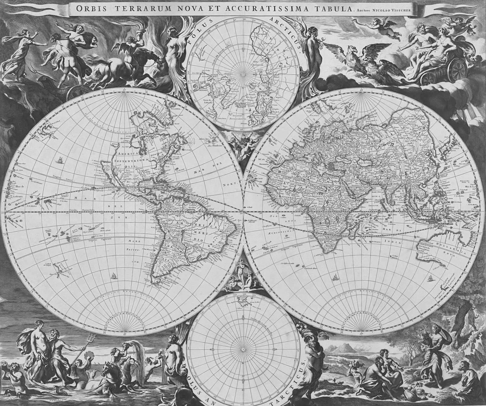

Il lago
Il lago
Cursori
Quattro cursori che reagiscono a ciò che toccano. Funzionano con il mouse (con il tocco seguono il dito); dove il puntatore non c’è, i contenuti restano comunque leggibili.
Torcia su una mappa

Cerchio a contrasto

Cursore play sul video
Cursore che cambia con l’elemento
Il cursore vero resta nascosto solo dove c’è un puntatore preciso
(@media (pointer: fine)): su telefono e tablet nessun cursore finto. Foto: Unsplash,
mappa del Rijksmuseum (pubblico dominio), video: Pexels.